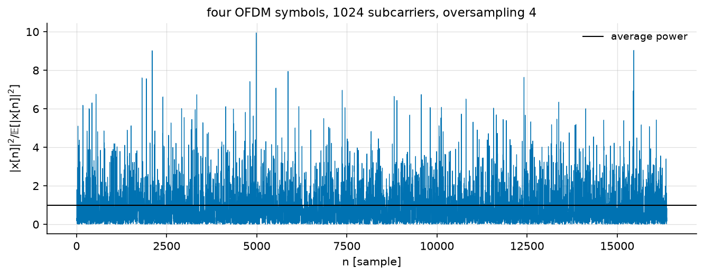
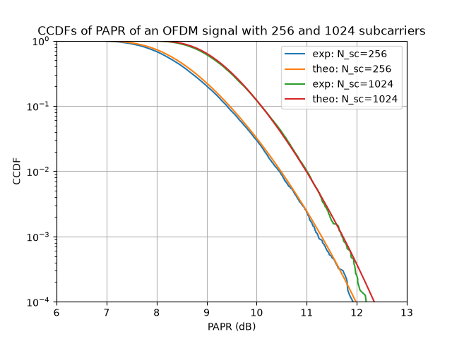
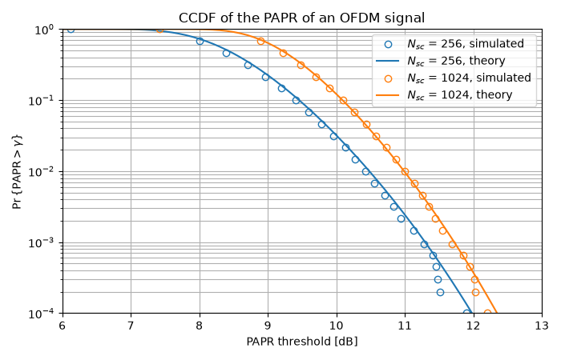

PAPR in OFDM Communication#
The previous tutorial ended well for OFDM: one complex division per subcarrier instead of a matrix inversion, and a receiver whose cost does not grow with the bandwidth. This tutorial is the bill.
The problem is at the transmitter. An OFDM symbol is the sum of \(N\) independently modulated subcarriers, and nothing in the format controls the amplitude of that sum: most of the time the subcarriers interfere every which way and the waveform stays moderate, but occasionally they align and produce a peak far above the average power. Every element that is not perfectly linear – the power amplifier first of all, but also the converters – then either clips the peak, which spreads the spectrum into the neighbouring bands, or is sized for it, which means being paid for the average while paying for the peak.
Note
Before you start. OFDM Tutorial built the OFDM transmitter this tutorial reuses. Here we do not look at the error rate at all, but at the shape of the waveform itself.
What you’ll learn:
Why the amplitude of an OFDM waveform is not controlled, and what law it follows.
How to compute the PAPR of an OFDM signal.
How to estimate the Complementary Cumulative Distribution Function (CCDF) of the PAPR, and compare it with theory.
We reproduce the first figure of “An overview of peak-to-average power ratio reduction techniques for multicarrier transmission”, by Han and Lee (2005).
The OFDM Transmitter#
The transmitter is the one of the previous tutorial, up to the IFFT: symbols are mapped, grouped into blocks of \(N_{sc}\), allocated to subcarriers, and transformed. Oversampling is obtained by zero padding – the data occupy \(N_{sc}\) of the \(4 N_{sc}\) bins – so that the IFFT interpolates between the Nyquist samples. Without it, peaks that fall between two samples are simply not seen.
"""What an OFDM waveform looks like in amplitude, and how often it peaks.
Run from this directory: it writes the tutorial's figures into
../../docs/tutorials/img/.
"""
import matplotlib.pyplot as plt
import numpy as np
from scipy.optimize import brentq
from comnumpy.core import Sequential
from comnumpy.core.generators import SymbolGenerator
from comnumpy.core.mappers import SymbolMapper
from comnumpy.core.metrics import compute_ccdf
from comnumpy.core.processors import Serial2Parallel
from comnumpy.core.utils import Constellation
from comnumpy.ofdm.metrics import compute_papr, compute_papr_ccdf_theo
from comnumpy.ofdm.processors import CarrierAllocator, IFFTProcessor
from comnumpy import style
style.use()
img_dir = "../../docs/tutorials/img/"
N_sc = 1024
os = 4 # oversampling, to see the peaks
constellation = Constellation("PSK", 4)
# --- what the transmitter puts out -----------------------------------
# One transmitter, up to the IFFT. Oversampling is zero padding: the
# data occupy N_sc of the os * N_sc bins, so the IFFT interpolates
# between the Nyquist samples and the peaks stop hiding between them.
carrier_1024 = np.zeros(os * N_sc)
carrier_1024[:N_sc] = 1
ofdm_1024 = Sequential([
SymbolGenerator(constellation.order, name="tx"),
SymbolMapper(constellation),
Serial2Parallel(N_sc, name="s2p"),
CarrierAllocator(carrier_type=carrier_1024, name="carrier_allocator"),
IFFTProcessor(),
], name="ofdm 1024")
Let us generate four OFDM symbols and look at the instantaneous power, normalized by its own mean:
ofdm_1024.seed(0)
blocks = ofdm_1024(4 * N_sc) # four OFDM symbols
signal = np.ravel(blocks) # C-order flatten of the (T, F) blocks
power = np.abs(signal) ** 2 / np.mean(np.abs(signal) ** 2)
fig, ax = plt.subplots(figsize=(9, 3.6))
ax.plot(power, lw=0.6)
ax.axhline(1.0, color="k", lw=1.0, label="average power")
ax.set_xlabel("$n$ [sample]")
ax.set_ylabel(r"$|x[n]|^2 / \mathbb{E}[|x[n]|^2]$")
ax.set_title(f"four OFDM symbols, {N_sc} subcarriers, oversampling {os}")
ax.legend()
ax.grid(True, alpha=0.4)
plt.tight_layout()
plt.savefig(f"{img_dir}/monte_carlo_ofdm_papr_fig1.png")
{kind=link}

The waveform spends most of its time below its average power and occasionally reaches eight or ten times it. This is not a property of the modulation – QPSK has a constant modulus – but of the sum.
The distribution of the samples#
Each time sample is a sum of \(N_{sc}\) independent terms, so for \(N_{sc}\) large the central limit theorem applies: \(x[n]\) is asymptotically a circular complex Gaussian, and its power is therefore exponentially distributed,
which is a law with no upper bound: arbitrarily large peaks have small but non-zero probability.
# --- why it looks like that ------------------------------------------
# Each sample is a sum of N_sc independent terms, so the central limit
# theorem applies: the samples are complex Gaussian, and their power is
# exponential. Nothing about OFDM is needed beyond that.
long_run = np.ravel(ofdm_1024(200 * N_sc))
normalized = long_run / np.std(long_run)
gain = np.abs(long_run) ** 2 / np.mean(np.abs(long_run) ** 2)
fig, (ax_left, ax_right) = plt.subplots(nrows=1, ncols=2, figsize=(10, 4))
grid = np.linspace(-4, 4, 200)
ax_left.hist(np.real(normalized), bins=100, range=(-4, 4), density=True,
alpha=0.5, label=r"$\Re\{x[n]\}$")
ax_left.plot(grid, np.exp(-grid ** 2) / np.sqrt(np.pi), lw=2,
label=r"$\mathcal{N}(0, 1/2)$")
ax_left.set_xlabel("normalized amplitude")
ax_left.set_ylabel("probability density")
ax_left.set_title("the samples are Gaussian")
grid = np.linspace(0, 8, 200)
ax_right.hist(gain, bins=100, range=(0, 8), density=True, alpha=0.5,
label=r"$|x[n]|^2$")
ax_right.plot(grid, np.exp(-grid), lw=2, label=r"$e^{-\gamma}$")
ax_right.set_yscale("log")
ax_right.set_ylim(1e-5, 2)
ax_right.set_xlabel(r"normalized power $\gamma$")
ax_right.set_title("so their power is exponential")
for ax in (ax_left, ax_right):
ax.legend()
ax.grid(True, alpha=0.4)
plt.tight_layout()
plt.savefig(f"{img_dir}/monte_carlo_ofdm_papr_fig2.png")
{kind=link}

The left panel confirms the Gaussian law on the real part; the right one, on a logarithmic ordinate, follows \(e^{-\gamma}\) over four decades.
The PAPR Metric#
The quantity an amplifier is sized on is the Peak-to-Average Power Ratio of one OFDM symbol,
usually quoted in decibels. compute_papr()
reduces along the axis one waveform lies on, so a block array gives one value
per OFDM symbol without any reshaping; reduction then says what to do
with those values, which saves reducing them by hand:
# --- the metric -------------------------------------------------------
papr_dB = compute_papr(blocks, unit="dB", axis=-1)
line = "PAPR of the four symbols above: "
for value in papr_dB:
line += f"{value:.2f} "
print(line + "dB")
print(f"their average : "
f"{compute_papr(blocks, unit='dB', axis=-1, reduction='mean'):.2f} dB")
PAPR of the four symbols above: 9.55 9.98 8.29 9.56 dB
their average : 9.34 dB
Note that the four values differ by more than 1.5 dB. The PAPR is itself a random variable, so a single number does not characterize the waveform: what matters is how often a given level is exceeded.
The CCDF of the PAPR#
That question is answered by the complementary cumulative distribution function,
If the \(N\) samples of an OFDM symbol were independent, each with the exponential law above, the maximum would exceed \(\gamma\) unless all of them stayed below it:
Oversampled samples are not independent – the waveform is band limited, so neighbouring samples are correlated – but the same expression still fits the measurement with an effective number of samples \(\alpha N_{sc}\), with \(\alpha \simeq 2.8\) for an oversampling of 4 or more (van Nee and Prasad, 2000).
That is compute_papr_ccdf_theo(), which takes
the oversampling rather than the effective count: the fit belongs to the
library, with its domain of validity, rather than to each script that draws
the curve.
A fit-free alternative based on level-crossing counts exists – the same
function returns it with method="level_crossing" – but it describes the
peak of the continuous-time waveform, which sampled data can only
underestimate, so it reads high here.
Implementation#
We estimate the CCDF over 20 000 OFDM symbols, for 256 and 1024 subcarriers:
# --- the distribution -------------------------------------------------
# Two subcarrier counts, so two chains -- the 1024 one already exists.
# The batch needs no loop: Serial2Parallel stacks the OFDM symbols on
# the leading axis, so 20 000 symbols are one call and compute_papr
# reads one value per row.
n_symbols = 20000
threshold_dB = np.arange(4, 14, 0.1)
carrier_256 = np.zeros(os * 256)
carrier_256[:256] = 1
ofdm_256 = Sequential([
SymbolGenerator(constellation.order, name="tx"),
SymbolMapper(constellation),
Serial2Parallel(256, name="s2p"),
CarrierAllocator(carrier_type=carrier_256, name="carrier_allocator"),
IFFTProcessor(),
], name="ofdm 256")
ofdm_256.seed(1)
papr_256 = compute_papr(ofdm_256(n_symbols * 256), unit="dB", axis=-1)
ofdm_1024.seed(1)
papr_1024 = compute_papr(ofdm_1024(n_symbols * N_sc), unit="dB", axis=-1)
measured = {"$N_{sc}$ = 256": compute_ccdf(papr_256),
"$N_{sc}$ = 1024": compute_ccdf(papr_1024)}
reference = {
"$N_{sc}$ = 256": compute_papr_ccdf_theo(threshold_dB, 256,
oversampling=os, unit="dB"),
"$N_{sc}$ = 1024": compute_papr_ccdf_theo(threshold_dB, 1024,
oversampling=os, unit="dB")}
# Markers are placed on a logarithmic grid of the ordinate: spacing them
# evenly in index would crowd the top of the curve and leave the tail --
# the part the amplifier is sized on -- with no marker at all.
levels = np.logspace(0, -4, 25)
fig, ax = plt.subplots(figsize=(7, 4.5))
for name, (sorted_dB, ccdf) in measured.items():
shown = np.clip((ccdf.size * (1 - levels)).astype(int), 0, ccdf.size - 1)
line, = ax.plot(sorted_dB[shown], ccdf[shown], "o", fillstyle="none",
label=f"{name}, simulated")
ax.plot(threshold_dB, reference[name], "-", color=line.get_color(),
label=f"{name}, theory")
ax.set_yscale("log")
ax.set_ylim(1e-4, 1)
ax.set_xlim(6, 13)
ax.set_xlabel("PAPR threshold [dB]")
ax.set_ylabel(r"$\Pr\{\mathrm{PAPR} > \gamma\}$")
ax.set_title("CCDF of the PAPR of an OFDM signal")
ax.grid(True, which="both")
ax.legend()
plt.tight_layout()
plt.savefig(f"{img_dir}/monte_carlo_ofdm_papr_fig3.png")
Results#
{kind=link}

for n_sub in (256, 1024):
solved = brentq(lambda t, n=n_sub: compute_papr_ccdf_theo(
t, n, oversampling=os, unit="dB") - 1e-3, 0, 20)
print(f"N_sc = {n_sub:4d}: PAPR exceeded once in a thousand symbols above "
f"{solved:.2f} dB")
N_sc = 256: PAPR exceeded once in a thousand symbols above 11.30 dB
N_sc = 1024: PAPR exceeded once in a thousand symbols above 11.72 dB
The measured points sit on the closed form over the whole range. As expected, the probability of a large PAPR grows with the number of subcarriers – but slowly: four times as many subcarriers cost only 0.4 dB, because the number of samples enters through a logarithm. The peak of a sum of many independent terms grows very slowly with how many there are.
Conclusion#
This tutorial highlighted:
Why an OFDM waveform has an uncontrolled amplitude, and why its samples are Gaussian and their power exponential.
How to compute the PAPR of an OFDM symbol.
How to estimate the CCDF of the PAPR and compare it with its closed form.
Key takeaway:
An OFDM signal exhibits a PAPR of the order of 11 to 12 dB at the
\(10^{-3}\) level, whatever the system size, which is what forces
either an amplifier backoff or a PAPR reduction technique. The library
ships several of the latter, in
examples/ofdm/one_shot_ofdm_papr_reduction.py.